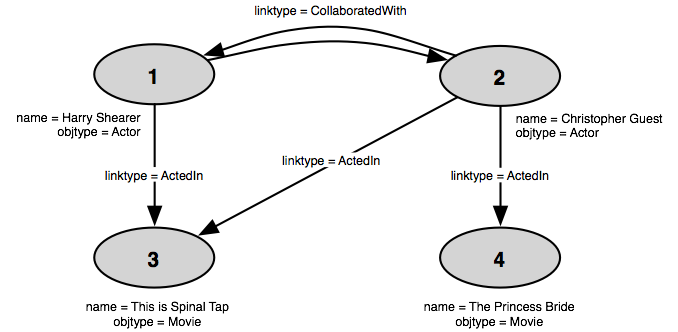

When working with relational data, you often want to know the degree of a node in the graph (an object in Proximity). This recipe demonstrates how to calculate the degree of an object and store that value as an attribute on the object.
Suppose you have a database like the one shown in the following fragment:
|  |
The example database contains actors and movies. Actors are linked to the movies they’ve appeared in by ActedIn links, and actors that have appeared in the same movie are connected by a pair of CollaboratedWith links, one in each direction. In the fragment shown above, both Christopher Guest and Harry Shearer appeared in This is Spinal Tap, so there is a pair of CollaboratedWith links connecting the actors.
The recipe in “Aggregation in NSTs” showed us
how to use the aggregate() method to summarize multiple pieces
of information for a single object. In the current example, we can
think of each linked object as a piece of information for the target
object, which we summarize by counting all such linked objects, once
again using the versatile aggregate() method.
The pieces of information we need—the different objects linked to our target node—are contained in the links NST.
printNST(prox.linkNST)
[SHOWING head,link_id,o1_id,o2_id WHERE * LIMIT *] [ 1@0, 1@0, 1@0, 3@0 ] [ 2@0, 2@0, 2@0, 3@0 ] [ 3@0, 3@0, 2@0, 4@0 ] [ 4@0, 4@0, 1@0, 2@0 ] [ 5@0, 5@0, 2@0, 1@0 ]
The links NST contains one row per link. To get the degree of
an object, we need to count the number of rows that show that object
as the start node for a link (rows having the target object ID in the
o1_id column) and add that to
the number of rows that show that object as the terminating node for a
link (rows having the target object ID in the
o2_id column).
We can accomplish this more easily by employing a neat trick involving adding inverse “links” to our link data. (Because these inverses are not added to the links NST, they are not actually added to the database.) First, we create an NST that contains the inverses of all the links in the database.
inverseLinks = prox.linkNST.project("o2_id, o1_id")
printNST(inverseLinks)
[SHOWING head,o2_id,o1_id WHERE * LIMIT *] [ 1@0, 3@0, 1@0 ] [ 2@0, 3@0, 2@0 ] [ 3@0, 4@0, 2@0 ] [ 4@0, 2@0, 1@0 ] [ 5@0, 1@0, 2@0 ]
Then we create an NST that combines the actual link data with the data from the inverse-link NST we just created. (The steps to create the biDirLinks NST have been broken up into two lines for clarity and formatting purposes; you can string the method calls together on one line if you prefer.)
biDirLinks = prox.linkNST.project("o1_id, o2_id")
biDirLinks.insertRowsFromNST(inverseLinks)
printNST(biDirLinks)
[SHOWING head,o1_id,o2_id WHERE * LIMIT *] [ 1@0, 1@0, 3@0 ] [ 2@0, 2@0, 3@0 ] [ 3@0, 2@0, 4@0 ] [ 4@0, 1@0, 2@0 ] [ 5@0, 2@0, 1@0 ] [ 6@0, 3@0, 1@0 ] [ 7@0, 3@0, 2@0 ] [ 8@0, 4@0, 2@0 ] [ 9@0, 2@0, 1@0 ] [ 10@0, 1@0, 2@0 ]
Now we can aggregate over the IDs in the
o1_id column to get a total count of links
going out of or into each object. That is, we group on
o1_id and count the number of
(non-distinct) o2_id values for each
value of o1_id.
degreeNST = biDirLinks.aggregate("count", "o1_id", "o2_id")
printNST(degreeNST)
[SHOWING head,o1_id,o2_id WHERE * LIMIT *] [ 0@0, 1@0, 3 ] [ 1@0, 2@0, 4 ] [ 2@0, 3@0, 2 ] [ 3@0, 4@0, 1 ]
The aggregate() method reuses the column names specified
in the method call. Thus, the column containing the group
identifier is labeled o1_id and the
column containing the counts is labeled
o2_id. Note that the count
operator gives us a count of all linked objects,
not of distinct linked objects.
The resulting NST contains the data we want to use for the new
degree attribute. As we saw in the recipe
“Creating Attributes from Arbitrary Data”, we just need to rename
the columns of the NST so that they
have the expected names id and
value, then use that NST to
define the values for the new degree
attribute.
objectAttrs = prox.objectAttrs
degreeNST.renameColumns("id, value")
objectAttrs.defineAttributeWithData("degree", "int", degreeNST)
There are many variations on simple degree that we might find useful in developing models. Calculating these values involve simple modifications to the above procedure.
Sometimes we might want to limit our degree calculations to include only links of a specified type. Suppose we only wanted to know the degree of ActedIn links. To get this value we limit the links included in the bi-directional NST to those of the specified type. We start by creating an NST containing all the links of the desired type.
actedInLinks = DB.getLinks("linktype = 'ActedIn'")
printNST(actedInLinks)
[SHOWING head,link_id,o1_id,o2_id,linktype WHERE * LIMIT *] [ 0@0, 1@0, 1@0, 3@0, "ActedIn" ] [ 1@0, 2@0, 2@0, 3@0, "ActedIn" ] [ 2@0, 3@0, 2@0, 4@0, "ActedIn" ]
Now create the inverse links and combine them with the links in the actedInLinks NST to obtain an NST of all ActedIn links and their inverses. Use this new bi-directional NST to calculate and define the degree attribute as before.
Similarly, we might only care about the degree of objects of a specific type. To limit our degree calculations to the specified objects, we start by creating an NST that holds the IDs of the objects that we’re interested in, in this case, actors.
actorObjects = DB.getObjects("objtype = 'Actor'")
printNST(actorObjects)
[SHOWING head,id,objtype WHERE * LIMIT *] [ 0@0, 1@0, "Actor" ] [ 1@0, 2@0, "Actor" ]
Now we can join that NST with the (full) bi-directional link NST we created earlier. The join with the bi-directional links NST returns rows where the originating object is an actor.
actorBiDirLinks = biDirLinks.join(actorObjects,"o1_id = id", "o1_id, o2_id")
Note that this limits the objects for which we calculate
degree to Actor objects but does not
similarly restrict the type of the linked objects. If we wanted to
limit our degree calculations to only actor-to-actor links, we can do
so by joining the actorObjects NST with the
links NST to create an NST where o2_id only
contains actors, then using that in place of the links NST when
creating our bi-directional NST.
We needed the trick of creating inverse “links” above because we wanted to include both link directions in our degree calculations. But suppose we only care about the number of links terminating at the target object (in degree) or the number of links originating from the target object (out degree)? This is even simpler—we can skip creating the bi-directional NST and use the links NST directly.
To calculate the out degree, we group on the originating object
(o1_id) and count the number rows for
each ID in o1_id.
outDegree = prox.linkNST.aggregate("count", "o1_id", "o2_id")
printNST(outDegree)
[SHOWING head,o1_id,o2_id WHERE * LIMIT *] [ 0@0, 1@0, 2 ] [ 1@0, 2@0, 3 ]
And to get the in degree, we group on the terminating object
(o2_id).
inDegree = prox.linkNST.aggregate("count", "o2_id", "o1_id")
printNST(inDegree)
[SHOWING head,o2_id,o1_id WHERE * LIMIT *] [ 0@0, 3@0, 2 ] [ 1@0, 4@0, 1 ] [ 2@0, 2@0, 1 ] [ 3@0, 1@0, 1 ]
We can now proceed as before by renaming the columns and using
defineAttributeWithData() to create and populate the new
attribute.
All the above examples count multiple links connecting objects separately, but what if we want to instead count the number of unique objects that an object is linked to?
The aggregate() method solves this nicely with the
card aggregation operator. The card
operator counts the number of distinct values for a given group,
giving us exactly the values we want.
uniqueDegree = biDirLinks.aggregate("card", "o1_id", "o2_id")
Download the following XML data file to create the database used above to demonstrate this recipe:
Database:
DBManip_AddDegreeAttr_DB.xml
You may also want to examine the unit test file for this recipe at
$PROX_HOME/test/java/kdl/prox/cookbook/DegreeAttributeTest.java.